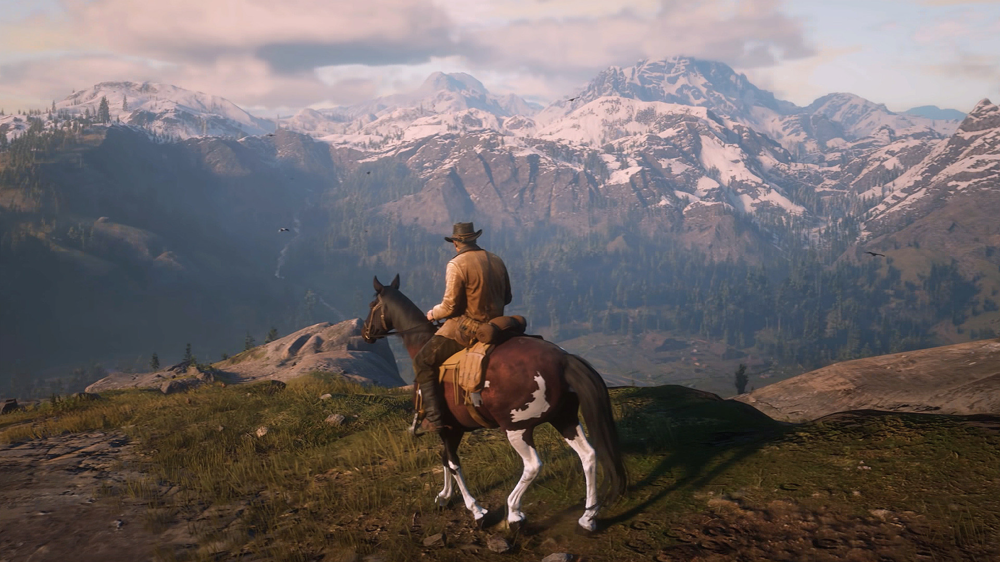
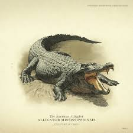
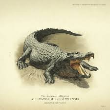

America, 1899. The end of the Wild West era has begun. After a robbery goes badly wrong in the western town of Blackwater, Arthur Morgan and the Van der Linde gang are forced to flee. With federal agents and the best bounty hunters in the nation massing on their heels, the gang must rob, steal and fight their way across the rugged heartland of America in order to survive. As deepening internal divisions threaten to tear the gang apart, Arthur must make a choice between his own ideals and loyalty to the gang who raised him.
It’s simply incredible how much Rockstar has accounted for. But even beyond the jaw-dropping graphics,and the gameplay, the story is something special and memorable. Red Dead Redemption 2 is a must-play for its entertainment value.It's the best game I've ever played by far. Read Dead Redemption 2 is a game that took 8 years of development, when playing you quickly realize that it was worth the wait. In the game you can do many different activities such as hunting, fishing, free roaming, completing missions, and much more.
Pros:
- The story animations are very entertaining
- There are many different activities you can do in the game other than story missions
- The generated world in Red Dead Redemption 2 is enormous
- Rockstar games recently added Red Dead Redemption 2 Online which allows you to interact with other players
- The currency system is very similar to the system in the late 1800 early 1900 to make the game seem as realistic as possible
-When out and about in the open world, the graphics are really nice, the world feels very real and alive, with weather changes, wildlife, nice scenery etc. The storms that come in look really beautiful.
Cons:
- The currency situation in the online version of the game is a problem due to the fact of how hard it is to make money to by things that are somewhat costly
- It's too much hassle to commit any crimes. If you defend yourself against an ennemy gang member, then the law will come after you right away for beating him up.


 
